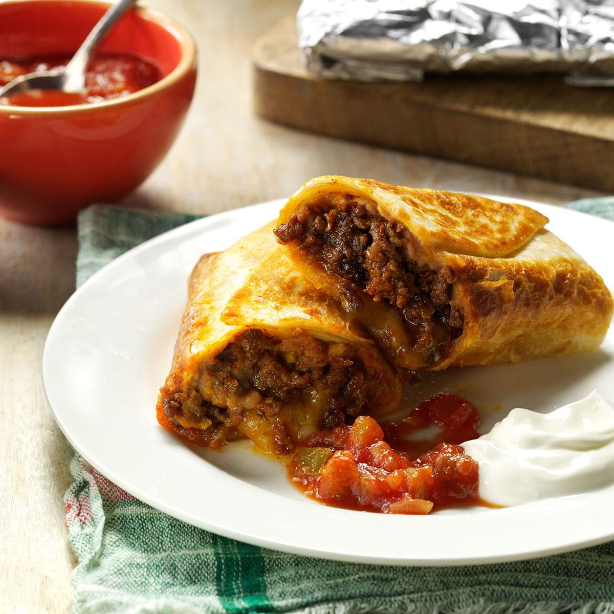

Tasty Burritos

Who Doesn't Love Mexican Food?
My best friend is of Mexican heritage, and I've watched his make this crunchy beef burrito recipe for years.
The very first time I made them for my own family, they instantly became a favorite meal. They're even better warmed up the next day in the microwave.
Ingredients
- 1 pound ground beef
- 1 envelope taco seasoning
- 1 can (16 ounces) refried beans
- 6 flour tortillas (12 inches), warmed
- 1 cup shredded Colby-Monterey Jack cheese
- 4 teaspoons canola oil
- Sour cream and salsa
Directions
- In a large cast-iron or other heavy skillet, cook beef over medium heat until no longer pink; drain.
Stir in taco seasoning; remove from skillet and set aside. Wipe skillet clean.
- In a small saucepan, cook refried beans over medium-low heat until heated through, 2-3 minutes.
- Spoon about 1/3 cup of beans off-center on each tortilla; top with 1/4 cup beef mixture. Sprinkle with cheese.
Fold sides and ends of tortillas over filling and roll up.
- In same skillet over medium-high heat, brown burritos in oil on all sides. Serve with sour cream and salsa.
Can You Freeze Them?
Individually wrap cooled burritos in paper towels and foil; freeze in a freezer container. To use, remove foil; place paper towel-wrapped burrito on a microwave-safe plate.
Microwave on high until heated through, turning once, 3-4 minutes. Let stand 20 seconds.
Tips
- For some additional heat, stir in ½ tsp. crushed red pepper flakes or ¼ tsp. ground cayenne pepper when adding the taco seasoning.
Don't have any taco seasoning on hand? Make its copycat spice blend.
- Burritos can be a well-rounded meal if not over-stuffed. To lighten them up, make homemade burritos with lean ground sirloin, fat-free refried beans,
reduced-fat cheese and light sour cream or non-fat plain Greek yogurt.